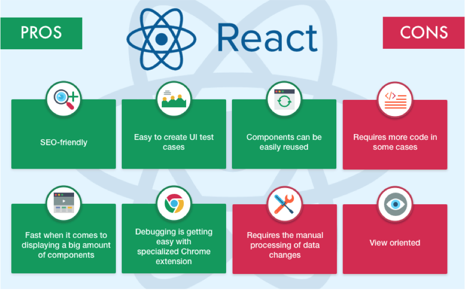
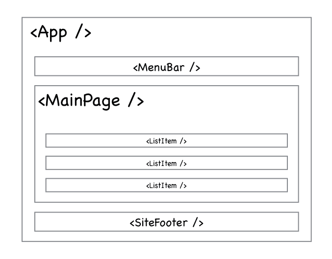
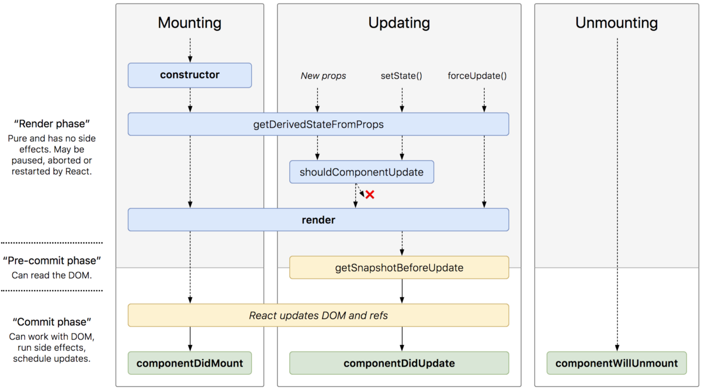
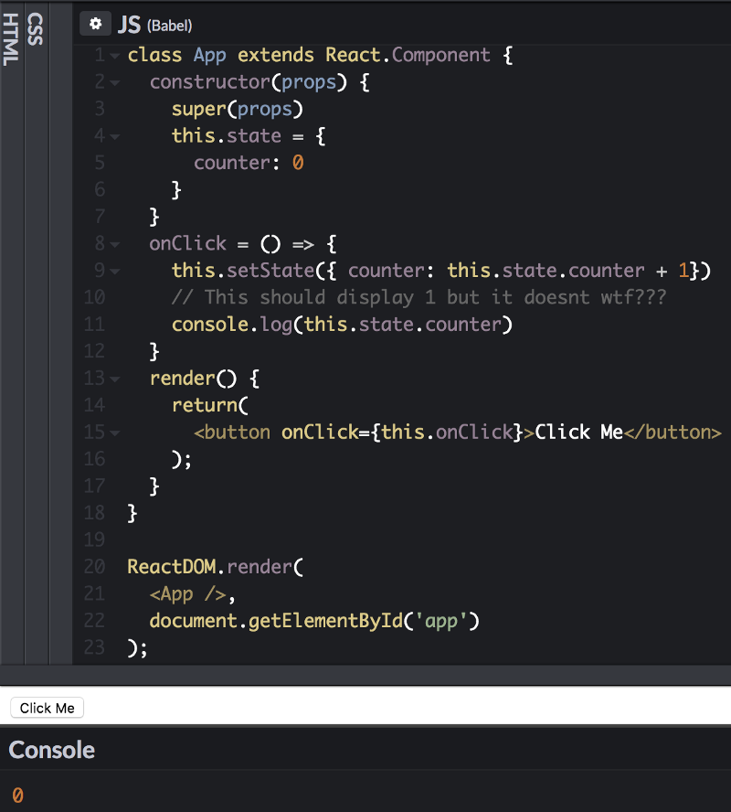
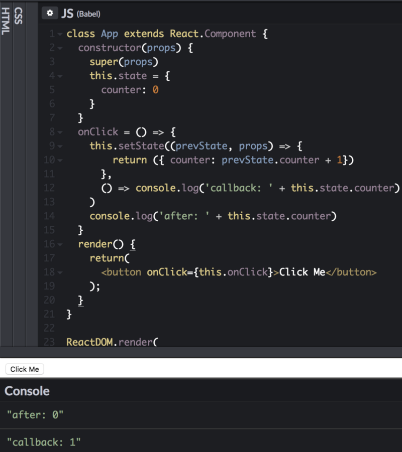
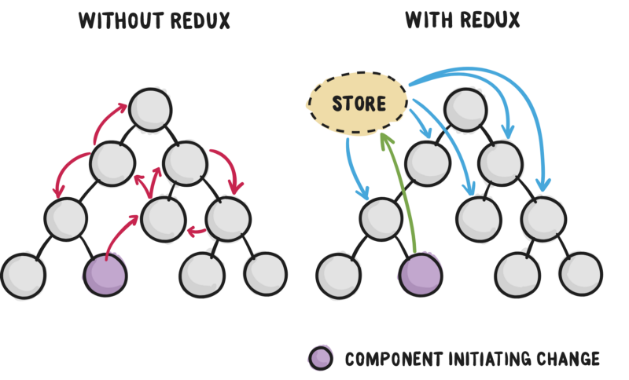
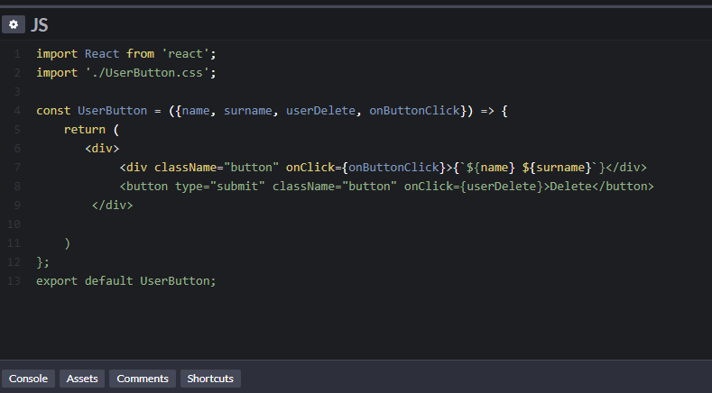

What is React JS?


3 concepts
The Component Lifecycle
React State and setState()
Redux
The Component Lifecycle

React State and setState()
 
Redux

What are the ReactJS Features?
JSX

Single-Way data flow
Virtual Document Object Model